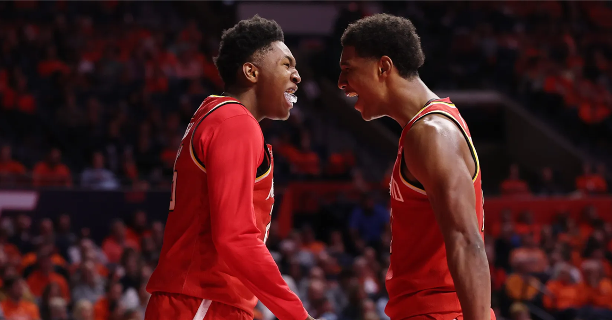
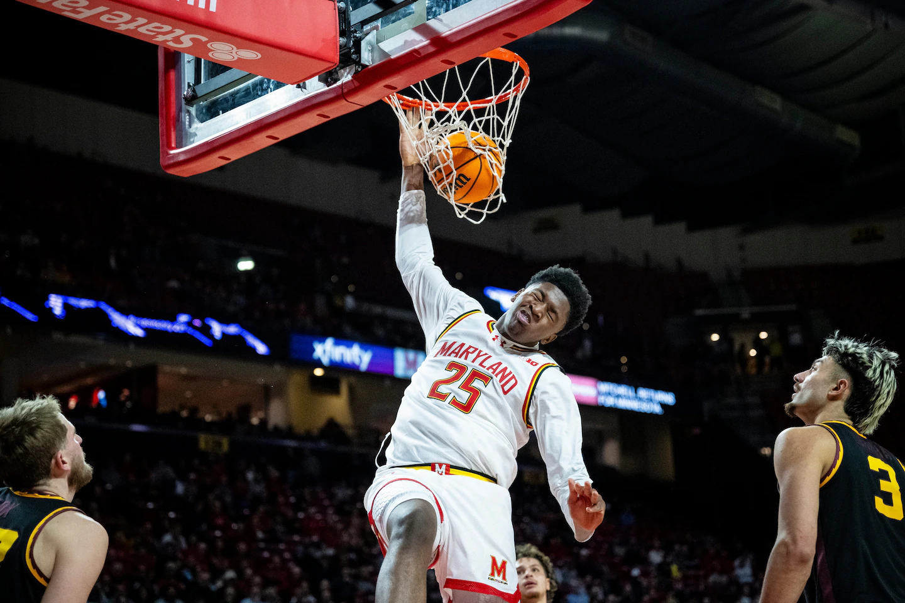
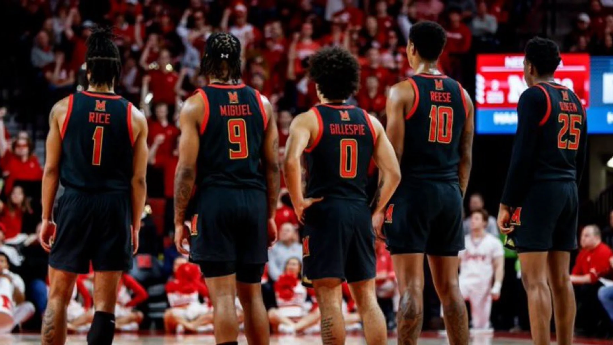

JuJu Reese '25 Stats
FG%: .555
2P%: .557
3P%: .000
FT%: .734
PPG: 13.3
RPG: 9.0
APG: 1.3
SPG: 1.1
BPG: 1.5
TPG: 1.5

Derik Queen was born and raised in Baltimore, attending the local Saint Frances Academy for high school. During his COVID-shortened freshman season at St. Frances, where he was teammates with a senior Julian Reese, Queen averaged 14 points, eight rebounds, and four assists per game. He was named the MaxPreps National Freshman of the Year and would later transfer to Montverde Academy in Florida, one of the most talented basketball high schools in the nation. Queen would go on to dominate at Montverde Academy, alongside the NBA’s 2025 first overall selection Cooper Flagg, ultimately leading to the center becoming a five-star recruit. Queen chose Maryland over schools like Houston, Indiana, and Kansas.
Julian “JuJu” Reese, like his top-notch teammate, was also born and raised in Baltimore. Reese started his high school career at New Town High School before transferring over to St. Frances Academy. Reese teamed up with a freshman Queen during his COVID-plagued senior season. The two linked again with the Maryland Terrapins, again when Reese was a senior and Queen was a freshman, but before that, the Baltimore native was named a four-star recruit. Coming out of high school, Reese also received an offer from LSU, but ultimately chose to stay home and attend the University of Maryland. His sister, Angel, was a member of the Terrapins’ women’s basketball squad before eventually transferring to LSU.

FG%: .526
2P%: .558
3P%: .200
FT%: .766
PPG: 16.5
RPG: 9.0
APG: 1.9
SPG: 1.1
BPG: 1.1
TPG: 2.4
FG%: .555
2P%: .557
3P%: .000
FT%: .734
PPG: 13.3
RPG: 9.0
APG: 1.3
SPG: 1.1
BPG: 1.5
TPG: 1.5

Terrapins
Season
The Maryland Terrapins, led by their Baltimore boys in Queen and Reese, finished the season with a 27-9 record, their highest win percentage since the 2015-16 season. The Terps notched a four seed in the NCAA March Madness tournament where they matched up with 13-seed Grand Canyon. Maryland advanced in an 81-49 victory, moving on to play Colorado State in the round of 32. The Terps’ contest against Colorado State saw one of the best shots in school history. With time running out, Queen tossed a bank shot that sent his school to the Sweet 16 for the first time since 2015-16. Unfortunately, the insanity run from Queen, Reese, and Maryland ended there with a loss to the one-seed Florida Gators, but the team gave their fans and students one of the most memorable seasons in recent history.